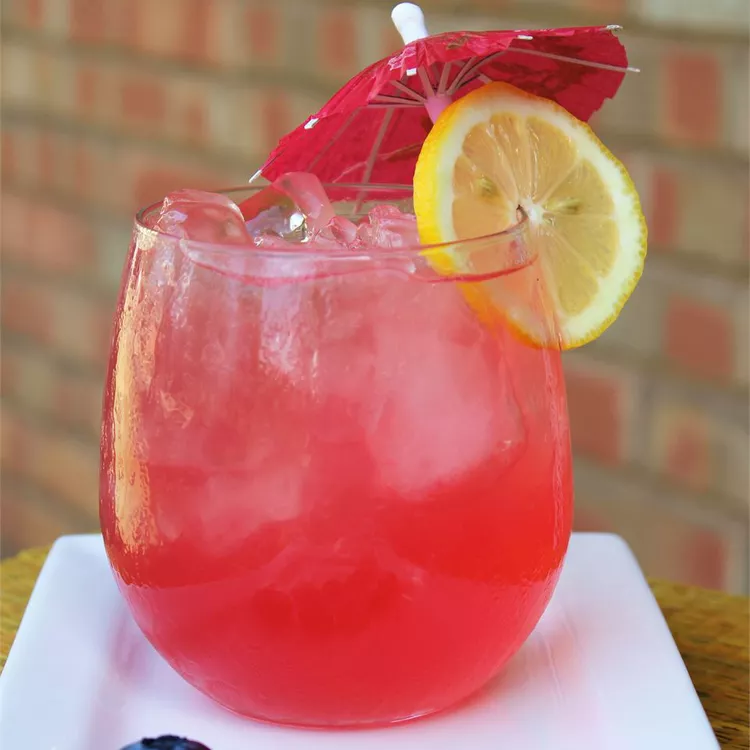

This hot pink lemonade is a refreshing, fun recipe for blueberry lemonade! Tart and sweet with a boost of antioxidants from the blueberries. The finished drink is hot pink, almost purple.

Prep Time: 15 minutes
Cook Time: 5 minutes
Servings: 6
Total Time: 20 minutes
Yield: 3 quarts
Ingredients
2 cups white sugar
1 cup water
2 ¼ cups fresh lemon juice
7 cups cool water
2 cups ice
¾ cup fresh blueberries
Instructions
Boil sugar and 1 cup water in a saucepan over medium-high heat, stirring until liquid becomes clear. Off heat, stir in lemon juice.
Add 7 cups cool water and ice to a serving pitcher. Add lemon syrup and blueberries; stir until reaches "hot pink" color.